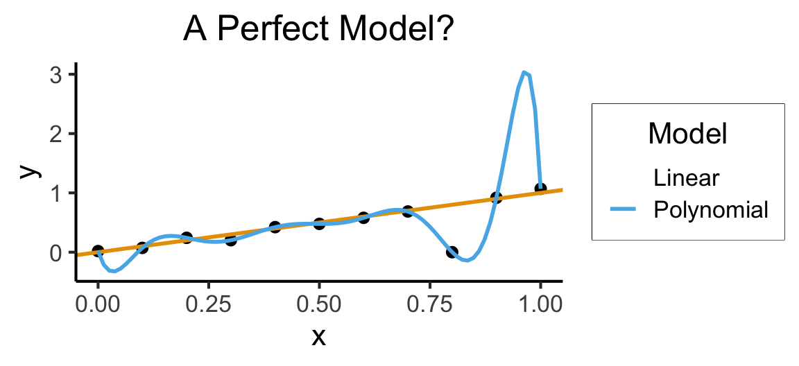

Week 4: The Scourge of Overfitting
DSAN 5300: Statistical Learning
Spring 2025, Georgetown University
Monday, February 3, 2025
…Can We Just, Like, Not?
- What happens if we “unleash” fancier non-linear models on data the same way we’ve been using linear models?
- The evil scourge of… OVERFITTING (⚡️ a single overly-dramatic lightning bolt strikes the whiteboard behind me right at this exact moment what are the odds ⚡️)
Code
library(tidyverse)
set.seed(5300)
N <- 30
x_vals <- runif(N, min=0, max=1)
y_vals_raw <- 3 * x_vals
y_noise <- rnorm(N, mean=0, sd=0.5)
y_vals <- y_vals_raw + y_noise
data_df <- tibble(x=x_vals, y=y_vals)
data_df |> ggplot(aes(x=x, y=y)) +
geom_point(size=2) +
stat_smooth(
method="lm",
formula="y ~ x",
se=FALSE,
linewidth=1
) +
labs(
title = paste0("Linear Regression, N = ",N)
) +
theme_dsan(base_size=28)
Memorizing Data vs. Learning the Relationship
Code
x <- seq(from = 0, to = 1, by = 0.1)
n <- length(x)
eps <- rnorm(n, 0, 0.04)
y <- x + eps
# But make one big outlier
midpoint <- ceiling((3/4)*n)
y[midpoint] <- 0
of_data <- tibble::tibble(x=x, y=y)
# Linear model
lin_model <- lm(y ~ x)
# But now polynomial regression
poly_model <- lm(y ~ poly(x, degree = 10, raw=TRUE))
#summary(model)
ggplot(of_data, aes(x=x, y=y)) +
geom_point(size=g_pointsize/2) +
labs(
title = "Training Data",
color = "Model"
) +
theme_dsan(base_size=16)
Code
ggplot(of_data, aes(x=x, y=y)) +
geom_point(size=g_pointsize/2) +
geom_abline(aes(intercept=0, slope=1, color="Linear"), linewidth=1, show.legend = FALSE) +
stat_smooth(method = "lm",
formula = y ~ poly(x, 10, raw=TRUE),
se = FALSE, aes(color="Polynomial")) +
labs(
title = "A Perfect Model?",
color = "Model"
) +
theme_dsan(base_size=16)